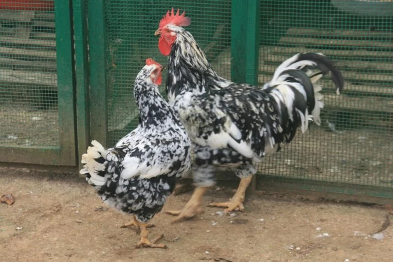

Pita Pinta Asturiana: la moteada de Asturias

La Pita Pinta Asturiana es la gallina autóctona de Asturias, de origen antiguo y ligada a los pueblos y aldeas del Principado, donde cada casa tenía sus «pites pintes» sueltas por el corral y la caleya (el camino). Su nombre lo dice todo: «pita» es gallina en asturiano y «pinta» es moteada. Hoy está catalogada como raza autóctona en peligro y es uno de los símbolos de la ganadería tradicional asturiana, presente en ferias como la de la Ascensión de Oviedo.
Origen e historia
La Pita Pinta Asturiana es la gallina autóctona de Asturias, de origen antiguo y ligada a los pueblos y aldeas del Principado, donde cada casa tenía sus «pites pintes» sueltas por el corral y la caleya (el camino). Su nombre lo dice todo: «pita» es gallina en asturiano y «pinta» es moteada. La raza decayó con la avicultura industrial y se recuperó a finales del siglo XX gracias a los criadores asturianos y a la Asociación de Criadores de Pita Pinta Asturiana (ACPPA), que mantiene el estándar y organiza concursos. Hoy está catalogada como raza autóctona en peligro y es uno de los símbolos de la ganadería tradicional asturiana, presente en ferias como la de la Ascensión de Oviedo.
Características físicas
La gallina: ave grande, de unos 3 a 3,5 kg, de cuerpo ancho y redondeado, con el pecho prominente y la cola de tamaño medio. Su plumaje es el rasgo inconfundible de la raza: negro moteado de blanco, con cada pluma terminada en una mancha blanca, como si la gallina estuviera salpicada de pintura. La cresta es sencilla, de tamaño mediano, con puntas bien definidas, y las orejillas son rojas. Las patas son amarillas, sin plumas.
El gallo: mayor, de 4 a 4,5 kg, con el mismo dibujo moteado que la gallina —algo poco habitual, porque en muchas razas gallo y gallina tienen capas distintas—, esclavina moteada, hoces negras con puntas blancas y una cresta sencilla grande y roja. Es un gallo imponente por su tamaño y por el contraste del moteado.
Variedades de plumaje
La variedad clásica es la pinta negra (negro moteado de blanco). Existe también la pinta roxa (moteado sobre fondo rojizo), menos extendida y mantenida por algunos criadores. El estándar exige el moteado repartido de forma uniforme por todo el cuerpo, sin zonas blancas grandes ni zonas negras sin motear.
Puesta
Pone en torno a 150–170 huevos al año, de color blanco o crema muy claro —es una de las pocas razas españolas de huevo blanco— y de buen tamaño. La puesta es regular en primavera y verano y baja en invierno. Es una gallina muy clueca y una madre excelente: saca y cría a sus pollitos con gran dedicación, y por eso en Asturias se la ha usado tradicionalmente también como nodriza de otras razas.
Carácter
Mansa, tranquila y confiada: la Pita Pinta es una gallina de trato fácil, que se deja coger, convive bien con otras aves y se adapta a la vida de corral familiar. El gallo, que en asturiano se llama «pitu caleya», es protector y cantarín, pero de carácter noble. Es una raza ideal para granjas familiares y para quien quiere gallinas con presencia y sin complicaciones.
Cuidados, alimentación y alojamiento
Es una raza grande y rústica, hecha para el clima húmedo y fresco de Asturias: aguanta bien el frío y la lluvia, pero necesita un gallinero seco y con cama limpia, porque su tamaño y su plumaje abundante la hacen sensible a la humedad constante en las patas. Necesita espacio —5 m² de prado por ave— y un gallinero con perchas fuertes (pesa mucho) y nidales amplios y bajos, porque a la gallina grande le cuesta subir a nidales altos. Come pienso de puesta, grano (maíz y trigo) y forraje; aprovecha el prado asturiano y los restos de huerta, y en invierno agradece un suplemento de maíz. Como es muy clueca, hay que retirarle los huevos con frecuencia si se quiere mantener la puesta.
Para qué sirve
Doble aptitud con acento en la carne y la cría: es un ave grande de crecimiento lento y carne excelente —el «pitu caleya» es plato tradicional asturiano—, buena ponedora de huevo blanco y una de las mejores madres entre las razas españolas. También tiene valor ornamental: su moteado es único y se reconoce a distancia.
Curiosidades
En asturiano, «pitu caleya» es el gallo de corral, y la expresión se usa también para hablar del gallo que manda en el pueblo; el moteado es igual en gallo y gallina, algo raro en las razas de plumaje vistoso; y la raza se salvó gracias a un puñado de criadores que guardaron sus «pites» cuando ya casi nadie las quería.
Fotos de la raza

Foto de gallina pendiente: la foto de gallina que circulaba como Pita Pinta no se usa en esta ficha: su descripción original la identifica como gallina andaluza pinta. Se pedirá una foto verificada a la Asociación de Criadores de Pita Pinta Asturiana (ACPPA).
Fotos y licencias
Las fotos de esta ficha son fotografías reales con licencia libre de uso comercial. La licencia CC BY-SA 4.0 exige atribuir al autor y compartir las adaptaciones bajo la misma licencia. Las fotos se publican en WebP a partir de los originales, con su autor y su licencia.
- Gallo (foto principal): Hector — CC BY-SA 4.0 (23-10-2014).
- Pareja: Hector — CC BY-SA 4.0 (23-10-2014).


Fuentes
Datos raciales contrastados con el catálogo oficial de razas del Ministerio de Agricultura, Pesca y Alimentación: Pita Pinta — datos morfológicos (MAPA). La raza la mantiene la Asociación de Criadores de Pita Pinta Asturiana (ACPPA), que gestiona el estándar y organiza concursos.
Prepara tu lote y tu gallinero
Antes de comprar aves, calcula el espacio que necesitas, lo que costará alimentarlas y cuándo tendrás los primeros huevos.
Comprueba la normativa local: algunas zonas exigen registrar las aves o avisar al ayuntamiento. Revisa las normas de tu municipio antes de criar.